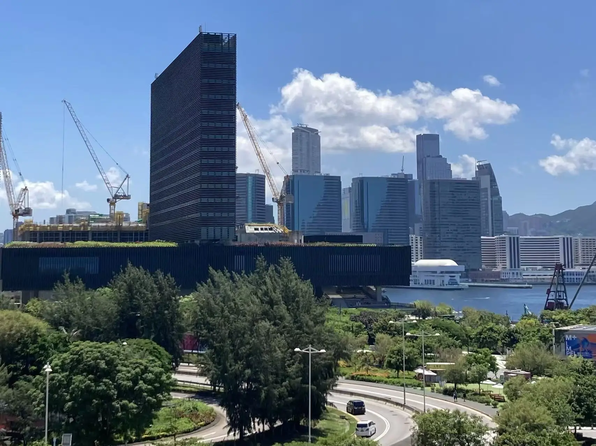
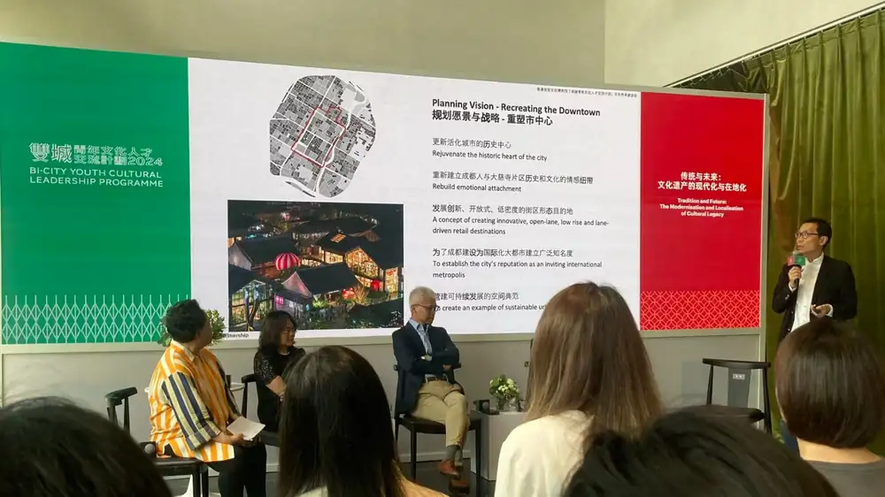
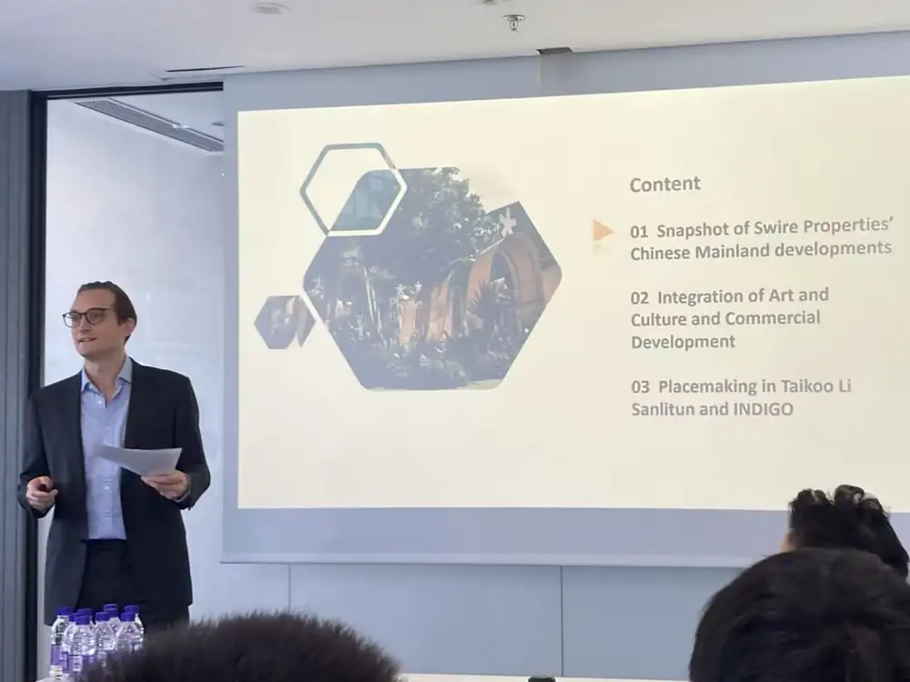
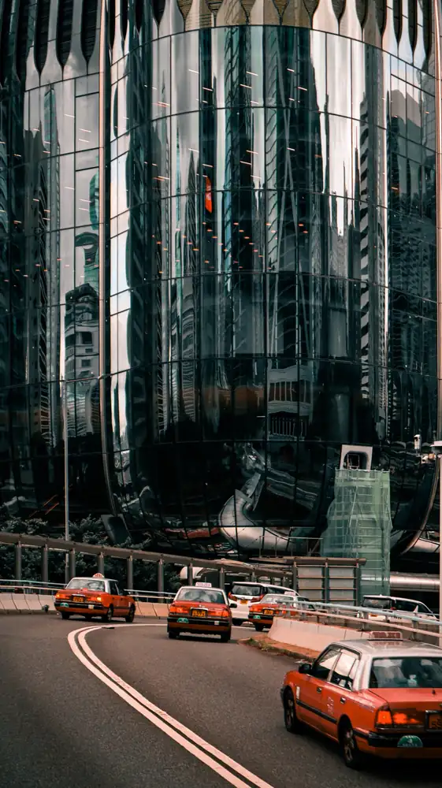
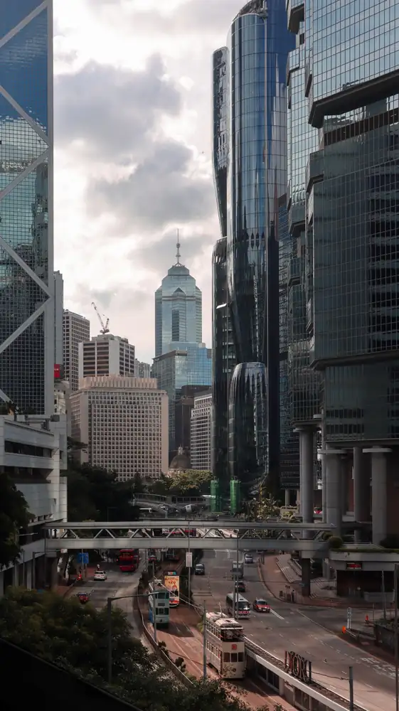
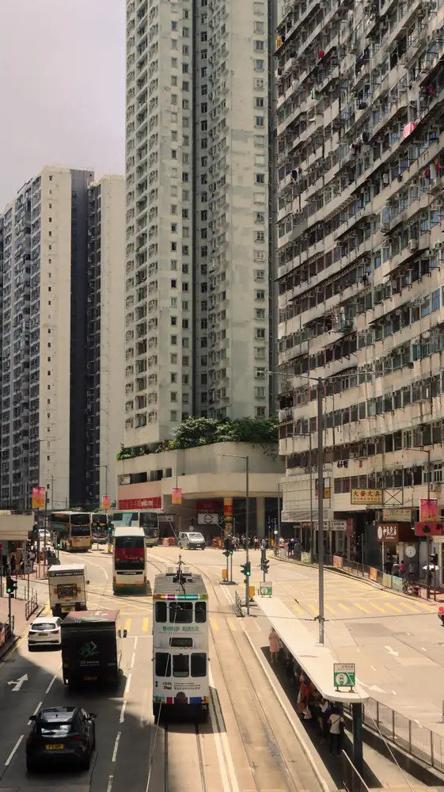
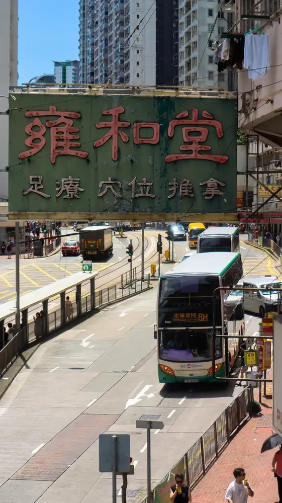
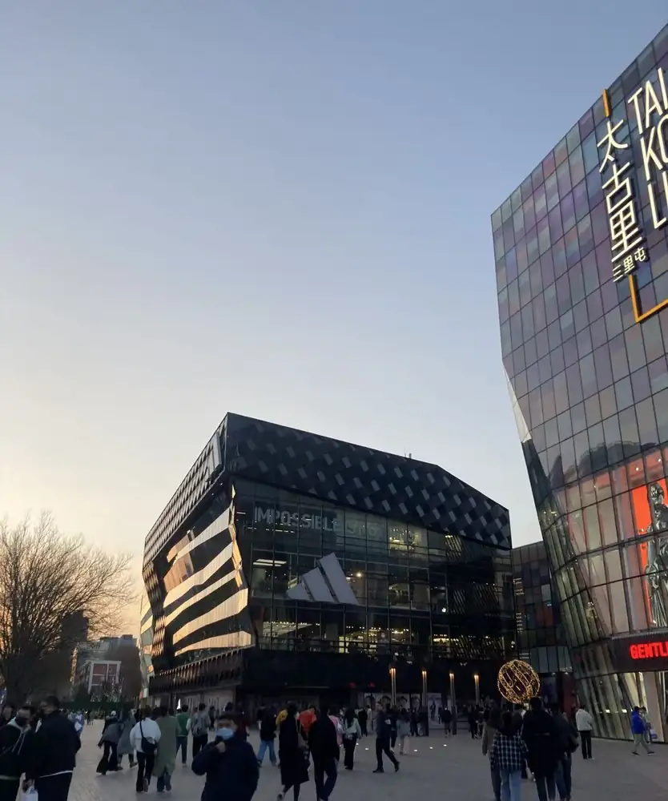
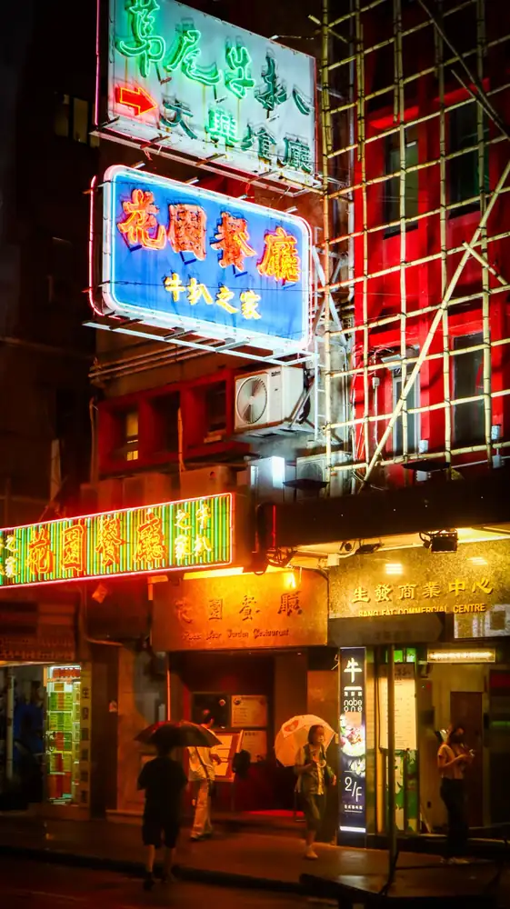
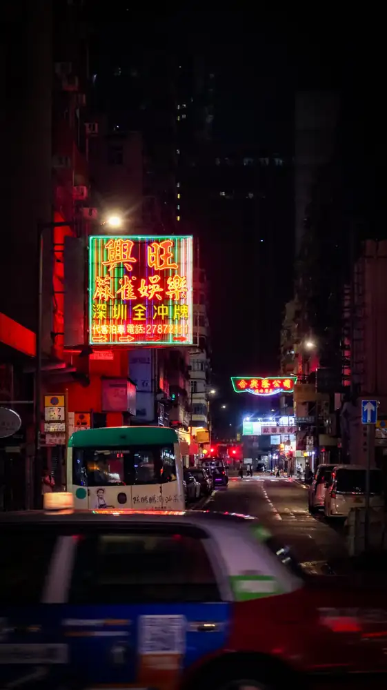

Culture After the Ribbon-Cutting
Who makes a district public after the architect leaves?
A cultural building opens once; public life is continually made. Access, governance, commerce, maintenance and everyday use determine what an urban place can become after the opening.
I joined the third Bi-City Youth Cultural Leadership Programme expecting to learn about museums and cultural institutions. Exchanges with cultural organisations and Swire Properties redirected my attention from the completed building to the relationships and decisions that keep a district active. The enquiry combines programme documentation, my own street photographs and published institutional accounts; it does not treat any one of these as proof of public access or civic benefit.

Research question
How do architecture, development and everyday stewardship produce a cultural ecosystem?
Culture depends on relationships.
The 2024 programme brought sixteen university students from Hong Kong and Beijing into an exchange across Hong Kong, Chengdu and Beijing under the theme “The Future of Cultural Ecosystems.” Workshops and site encounters placed cultural institutions, urban planning, commerce and public participation in conversation. [H1]
One presentation outlined a vision for recreating historic downtowns through open, low-rise streets, renewed cultural identity and commercial vitality. The photograph records what was presented as a planning ambition; it cannot establish whether the proposals were realised or whose interests they ultimately served. That distinction became central to my field enquiry: institutional narratives reveal intentions, while urban experience raises questions about their consequences.

Hong Kong became the principal territory of my reflection. Cultural buildings rely on audiences, educators and civic infrastructure; neighbourhoods rely on residents, shops and accumulated memories. The term ecosystem shifts attention from the isolated cultural object to the relationships that allow it to matter in the city.
The developer as an urban actor.
An exchange with Swire Properties introduced the relationship between cultural programming, commercial development and long-term place management. Its presentation connected mainland developments with the integration of art, culture and commercial activity, including examples of placemaking in Taikoo Li Sanlitun and INDIGO. These are the developer’s stated priorities; their outcomes require a different kind of evidence. [H2]

The important shift was temporal. Architects may work through a defined period of design and delivery, while owners and management organisations may influence a place for decades. Tenant selection, event programming, everyday maintenance and access procedures can affect what happens between buildings. These operational decisions deserve architectural scrutiny alongside the original plan.
Mapping rules alongside movement.
High-rise districts make different systems of connection visible: streets, tramways, roads, elevated walkways and commercial interiors overlap in a compact urban section. My photographs record some of those physical connections, but they do not reveal who controls each route, when access is permitted or how an activity is authorised.


A spatially continuous district can contain discontinuous rights. Crossing a plaza, staying there, photographing it and organising an event may each be governed differently. Mapping circulation would therefore be only a starting point; a fuller study would also require management policies, opening hours and accounts from people who use the spaces.
Public access is not the same as publicness.
Developments such as Taikoo Place prompted questions about the edges between privately managed open space and the surrounding neighbourhood. Can someone remain without buying anything? Can a community group organise an activity? How are disputes over use resolved? An attractive ground plane or extensive landscaping does not answer these questions on its own.
A privately governed space may support substantial public life while retaining rules that shape access and expression. At the same time, ordinary streets are not automatically inclusive. The research asks how different forms of control become legible and how people might negotiate them, rather than assigning a simple public/private value to each setting.

| What the image can show | What must be investigated |
|---|---|
| Pathways, thresholds and crossings | Opening times, accessibility and management |
| Spaces to sit or gather | Permissions for informal and organised use |
| Adjacent buildings and street edges | Tenancy, maintenance and ownership boundaries |
| Cultural signs and programming | Who selects, funds and revises representation |
Walking beyond the curated development.
Beyond deliberately programmed commercial destinations, Hong Kong’s ordinary streets bring infrastructure and daily life into close contact. In the field photographs, tramlines and bus stops sit alongside dense housing, pedestrian crossings and small businesses. The point is not to romanticise informality: each street contains its own rules, pressures and unequal claims to space.


Walking revealed transitions rather than isolated landmarks: transport stops to shops, residential buildings to busy streets, and commercial frontage to shared circulation. The photographs record particular spatial situations; they are not a systematic survey of who uses these spaces, for how long or with what sense of belonging.
Everyday situations rather than landmarks.
An urban situation has more than a recognisable form. A waiting point near a tram stop, a shopfront sheltered by an overhang or the crossing between two forms of transport depends on time, practical support and behaviour. A useful field record therefore combines photographs with observations about the activity occurring there and, where available, the rules governing it.
One photograph can indicate proximity, visual intensity or spatial arrangement; it cannot measure social inclusion. Returning to the same location at comparable times and gathering testimony would be needed to establish how a place works over time. The present essay distinguishes these questions from findings that the existing photographs can already support.
Chengdu and Beijing sharpened the question.
The programme’s Chengdu encounters placed Taikoo Li and its relationship with Daci Temple within discussions of cultural heritage and commercial development. In Beijing, Sanlitun Taikoo Li offered a contrasting setting, where retail buildings and pedestrian activity shape a contemporary commercial destination. The two contexts cannot be reduced to a single model of placemaking. [H1] [H2]


The comparison returns to a question of cultural identity. What can be preserved through built fabric, and what depends on institutions, uses and memories that architectural appearance alone cannot retain? Hong Kong became the place where these scales of public institutions, private development, infrastructure and neighbourhood life were read together.
From a cultural ecosystem to a shared record.
Their Story, the Eastern District community calendar, offered a smaller scale for reflecting on cultural representation. Rather than treating heritage as a set of buildings or visual motifs, the calendar asked whose everyday experiences become part of the public image of a neighbourhood. Its role in this enquiry is documentary and editorial, distinct from a proposal for new architecture.
A printed calendar cannot stand in for an entire neighbourhood or resolve competing interests. Its significance lies in how particular stories are selected, edited, presented and shared. The responsibility of representation belongs not only to the design of the publication but also to the relationship with the people whose experiences appear in it.
Who gets to become the story of a place?
Hong Kong’s illuminated shop signs are among the city’s most recognisable commercial images. The two photographs record particular fragments of night-time street life: signage, movement, shops and the visual accumulation of private businesses. They document a visible urban identity, but cannot speak for all the people who live or work behind it.


This question of visibility connects to Their Story. An editor gives certain accounts space and leaves others outside the frame. Distinguishing a resident’s account from an editor’s interpretation—and a particular story from a claim about the whole neighbourhood—is essential. A public record has civic value when its limits and authorship remain visible.
Public life after completion.
The enquiry changed the way I read architecture in time. The opening photograph is only one moment. The forms of care, investment, programming, conflict and adaptation that follow it all contribute to the changing character of a place. Culture can inform urban development, but it can also become a branding device when opportunities for participation are not examined.
The field photographs establish visible conditions; programme materials reveal institutional intentions; questions of management and lived experience remain open for further investigation. Reading these forms of evidence together is more revealing than treating a well-designed public realm as either automatically inclusive or necessarily exclusive.
Architecture creates space; stewardship shapes what a place can continue to become.
Sources & references
Institutional sources are cited separately from field photographs. External reference photographs carry their own authorship and reuse licences in the captions; they are not presented as photographs taken during the 2024 exchange.
- H1 / Reference
Hong Kong Palace Museum (2024). Hong Kong Palace Museum Launches Third Edition of “Bi-City Youth Cultural Leadership Programme”.
Programme launch, 2 August 2024: participants, theme, institutional partners and study locations.
Read reference ↗ - H2 / Reference
Swire Properties (2024). Hong Kong Palace Museum’s Third “Bi-City Youth Cultural Leadership Programme” Brings Together Beijing and Hong Kong University Students.
Programme conclusion, 22 August 2024. Institutional account of placemaking and cultural exchange, read critically alongside the author’s reflection.
Read reference ↗